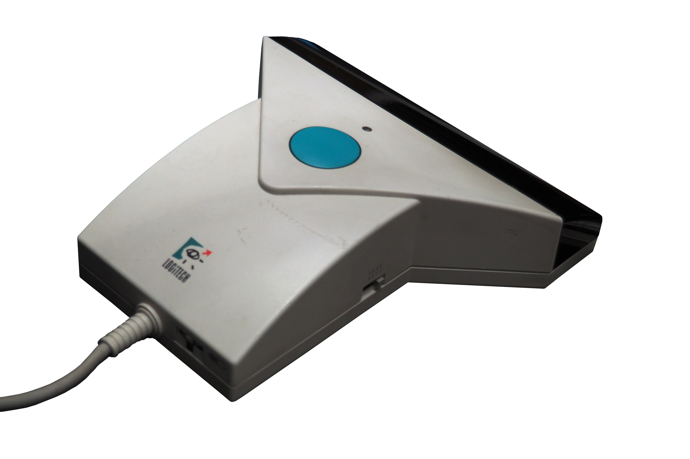

Logitech ScanMan
The scanner where your hand was the motor — every twitch came out as a pixel

Overview
The Logitech ScanMan was introduced in 1987 as one of the first affordable handheld scanners for personal computers. About 4 inches wide, it connected to a PC via serial port and was physically dragged by the user across the surface of the document to be scanned. The original model (gray, 200 dpi, 1-bit monochrome) was followed by the ScanMan 32 (1990, 32-shade grayscale) and the ScanMan Color (1992, 24-bit color). A specimen of the ScanMan Color is preserved in the Musée Bolo in Lausanne, Switzerland.
The interaction model was uniquely embodied: the user held the scanner like a fat highlighter pen and manually pulled it down the page at a constant speed. A small roller on the underside generated a clock signal for synchronization with the computer's sampling rate. An LED indicator would warn if the user moved too fast, which would cause horizontal compression in the resulting image. Each pass captured only a strip about 4 inches wide, so scanning a full letter-size page required multiple parallel passes that had to be software-stitched together.
This made scanning quality a direct function of the user's manual dexterity, steadiness, and patience. Unlike a flatbed scanner — where a motorized carriage does the work — the ScanMan eliminated the motor and made the human arm the scanning actuator, trading automation for embodiment in exchange for a lower price point (typically $200-400 versus $1,000+ for early flatbeds). It was an intriguing case of technological 'simplification' that actually demanded more from the user, not less.
Deep dive
The ScanMan represents a deliberate choice in interaction design: remove the motor and make the human do the mechanical work. The user initiates a scan by pressing and holding a button, then drags the scanner manually across the document. The roller encoder provides a clock — each 'tick' triggers one line of image capture — which means the scanning speed is directly coupled to the speed of the user's hand. Too fast, and pixels are stretched horizontally. Too slow, and they're compressed. Uneven speed produces wavy distortion. For full-page documents, the user makes multiple parallel passes and uses accompanying stitching software to align and merge the strips. This introduces a second layer of embodied interaction: spatial judgment (did the passes overlap enough?) and alignment patience. The user learns, through trial and error, to modulate their arm movement to produce acceptable scans. This feedback loop — make a pass, inspect the result, adjust technique, try again — makes scanning an acquired skill rather than a button press.
The ScanMan arrived in 1987, the same year Hewlett-Packard launched the first affordable flatbed scanner, the HP ScanJet. The ScanJet cost $1,990 and produced high-quality grayscale scans automatically. The ScanMan cost a fraction of that — typically $200-400 — but demanded the user's physical participation. This tradeoff created a fascinating market segment: users who needed occasional scanning but couldn't justify the expense of a flatbed. Handheld scanners remained a niche product throughout the 1990s, eventually rendered obsolete as flatbed scanner prices dropped below $300 by the end of the decade.
The ScanMan is an early example of what might be called 'trickle-up interaction design': a cheaper, simpler device that paradoxically requires more skill from its user. The human body fills a gap that in more expensive products would be handled by motors and precision engineering. This pattern reappears periodically in HCI history — consider the difference between a Wacom Cintiq (built-in display, zero parallax) and early graphics tablets where the user learned to draw while looking at a separate screen. The ScanMan is a compact object lesson in the embodied costs of affordability. Today, the ScanMan Color is preserved as part of the collection of the Musée Bolo (École Polytechnique Fédérale de Lausanne), Switzerland's museum of computer history, where it represents the transitional era between purely analog document handling and the automated digital scanning we now take for granted.
Team & pioneers
- Logitech. Swiss-American computer peripherals manufacturer; developed and marketed the ScanMan line
- Musée Bolo. computer history museum in Lausanne, Switzerland; holds a ScanMan Color in its permanent collection